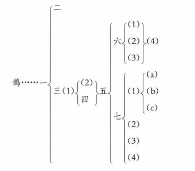

| 时间 | 备注 |
|---|---|
| 2024-08-22 | 开始阅读。一本指导如何写作的好书。 |
法则没用而有用，就在这一点，作文法的真价值，也就在这一点。
第一章 作者就有的态度
文章有内容和形式两方面。所谓好文章，就是达意表情。
怎样作法，最要紧的基本条件有两个：真实、明确。
（1）真实
文章是传达自己意思和情感给别人的东西。
“情者，文之经；辞者，理之纬；经正而后纬成，理定而后辞畅；此立文之本也。”
（2）明确
文章要能使读的人了解，才算达到了作文的目的，所以难解及容易误解的文章，都不能算是好的。
要注意的点：
- 勿模仿、勿剿袭
- 须自己造辞，勿漫用成语或典故
- 注意符号和分段
[!PDF|yellow] 跟大师学语文-文章作法, p.15
为了使文章的头绪清楚，应当把关于各个小的中心思想的文字作成一段；换句话说，就是一个小的中心思想应当作一段，而一段中也只应当有一个小的中心思想。文章的内容若十分复杂，一段里面还可分成几小段。分段的标准或依空间的位置，或依时间的顺序，或依事理自然的秩序，全看文章的内容怎样。至于每段的长短，这是全无关系的。
- 用字上的注意
第二章 记事文
第一节 记事文的意义
将人和物的状态、性质、效用等，依照作者所目见、耳闻或想象的情形记述的文字，称为记事文。
第一节 记事文的第一步
记事文以记述经验为目的
要作记事文先须经验事物，或目见，或耳闻，或参考书籍，从各方面收集材料，更将所得材料按适当的次序排列起来。
[!PDF|yellow] 跟大师学语文-文章作法, p.19
在初学的人，没有腹案的功夫的，并须将各材料一一地用短文记出。
第三节 材料的取舍和整理
选择材料的标准：一是适切题目，二是注重特色。
材料取舍完了，其次便是整理。凡是同类的材料，务必集合在一处，将冗繁支离的删去。
第四节 记事文的顺序
记事文的顺序大概有两种，一以观察的顺序为标准，一以事物本身的关系为标准。
作复杂的记事文，先须注目于关系事物全体的材料，然后顺次及于各部分；各部分的材料中，又是先列大的，后列小的。
(跟大师学语文-文章作法, p.22)
现在参考书籍，作《鸽》的记事文
(跟大师学语文-文章作法, p.23)
这文的顺序画出图来，恰如下所示。
凡事所记的事物非一见一闻就能明了，要从书籍上查考它的效用、构造历史……的，都应该用这个方法来记述。
第五节 文学的记事文
(跟大师学语文-文章作法, p.26)
例如以《月》为题，就有下面的两种作法：
（一）月是星体中最和人相近的。在天空中一面绕着地球转动，同时随了地球绕太阳而行。它和地球一样，还有自转。它的自转和绕着地球转动，都大约是二十七日又零一周，所以地球上的人只能和它的大部份相见。月上也有山，山岭最高的约二万六千尺至一万七千尺；如阿奔那尼（Apennines）一山，壁立雄峻的奇峰竟有三千多个。它的本体原是黑暗的，只是反射太阳的光以为光。太阳照着的部份全向地球的时候，看去很圆，这叫做“望”。太阳不照着的全黑的部份向着地球的时候，叫做“晦”。太阳照着的和没有照着的各有一部份向着地球的时候，叫做“弦”。
（二）窗外好像水国，近的屋，远的山，都用不很明白的轮廓，画在空中。屋角树林的下面，晕着神秘的色光。熄灯以后，月光闯入室内，在床上铺着一条青黄色的光带。夜静了，不知哪里来的呜咽幽扬的笛声，还隐约地在枕上听得。上面的第一篇，读了虽然可以得到关于月的状态和性质的知识，却不能感到月色的美感和月夜的情趣；这便是科学的记事文。第二篇，却恰好相反，只能给读者以月色的美感和月夜的情趣，至于月的性质和状态，却一点不曾写到；这是文学的记事文。
特别注意下列各项：
（1）想象
（2）注意特色
（3）杼述心情
要作好的文字，非对于事物有锐敏的感觉不可。
（4）使用含着动作的词句
凡要表示事物，必须在事物有动作的时候，不可在它静止的时候。
第三章 叙事文
第一节 叙事文的意义
记述人和物的动作、变化、或事实的推移的现象的文字，称为叙事文。
(跟大师学语文-文章作法, p.30)
宝钗与黛玉回至园中。宝钗因约黛玉往藕香榭去，黛玉因说还要洗澡，便各自散了。
叙事文原和记事文一样，同是记述事物的文字；不过记事文以记述事物的状态、性质、效用为主；而叙事文以记述事物的动作、变化为主。所以记事文是静的，空间的；叙事文是动的，时间的。
(跟大师学语文-文章作法, p.30)
（一）牵牛花有红的，紫的，颜色虽很美观，但少实用。这是述说牵牛花的形状和性质的，是记事文。
（二）院里的牵牛花，红的，紫的，都很鲜艳地开了。这是述说牵牛花的变化的，是叙事文。
第二节 记事文和叙事文的混合
文体的分类原只是为说明便利和作者自身态度不同，实际上并没有纯粹属于某种体裁的文字，记事文和叙事文虽因所记述的对象不同而有区别，在一篇关于事物的记述的文字中，总是相互混杂的。
第三节 叙事文的要素
叙事文既是记述现象的，所以也有四个要素：（一）现象的主体，（二）现象的演变，（三）现象发生的时间，（四）现象发生的场所。
第四节 叙事文的主想
材料选择的标准：除适切题目和注意特色以外，还因文目的而定。这个目的在叙事文中就是主想，大体有三类：
（一）以授与教训为主。例如传记等。
（二）以授与知识为主。例如历史等。
（三）以授与趣味为主。例如小说等。
总括一句，第一类以善为主，第二类以真为主，第三类以美为主。
但有一点需要注意，就是同一材料应当取舍不是材料本身的重要与否的问题，而是与主想的关系重要与否的问题。
第五节 叙事的观察点
叙事文所叙述的材料，不但是从作者自己经验得来，还有从别人的传说或书籍的记载得来的。
叙事文的观察点，就是作者所站的地位，可分为三种：
（一）居于发动者一边
（二）居于受动者一边
（三）居于旁观者一边
作叙事文须确定一种的观察点，全篇统一，不应摇动。通常的叙事文，以居于旁观者的地位的居多。
亦非绝对，参考《观察点的变动》
叙事文因观察点不同，对于同一材料，可作成各方面的文字。这步功夫，在学作叙事文上很重要。有这样功夫的作者，对于一件事就能理解要从哪方面叙述才省事。
第六节 观察点的变动
照前节所说，叙事文的观察点不应变更，使文气一致而不散漫、冗繁。但这只是一般的原则，在长篇的或复杂的叙事文，要将各方面的情形都表现得适当，却不得不变动。
叙述一件事，哪几方面的关系重要，以及哪些应当表现，哪些不应当表现，全依靠事件的性质，由作者自己的意见去判断，没有一个简明的标准。
第七节 叙事文的流动
叙事文的对象是事物的现象的展开，这展开的情形被叙述成文字的时候，就成了文字上的流动。现象的展开不止，文字的流动也就仍然继续，所以流动是叙事文的特色。
- 快的叙事文，以叙述事件的轮廓为目的；
- 慢的叙事文，以叙述事件的情况为目的。
第八节 叙事文流动的中止
叙事文的特色既然在流动，所以不但这流动须快慢适当，还须慎防中止。所谓流动中止，就是由时间的、动的叙事文，突然转到冗长的、空间的、静的记事文；或插入说明，使动态一时停滞。
第九节 叙事文流动的顺逆
叙事文是把事物的变化来展开的，所以流动的方向也有两种：第一种，照那变化自然的顺序，依次叙述，这是顺的；第二种，因为要叙明变化的前因后果，或并行的事件，不能全然依照自然的顺序而要有所颠倒，这是逆的。
第四章 说明文
第一节 说明文的意义
解说事物，剖释事理，阐明意象；以便使人得到关于事、事理或意象的知识的文字，称为说明文。
说明文和科学的记事文最重要的区别：对象的范围不同。科学的记事文比较具体；说明文比较抽象。
第二节 说明文的用途和题式
说明文本来是用较浅近明了易于理解的文字去解明事物或事理，使它的关系明了，范围确定，意义清晰，给人以关于该事物或事理的普遍的正确的知识，所以用途很广。
说明文题式通常有疑问式和直述式两种。
第三节 说明文的条件
说明文最简单的形式，就是单语的定义：复杂的说明文，无非是单语的定义的集合和它们的引申。
要想使人明了，说明文作法的条件须加多：
（一）所属的种类
（二）所具的特色
（三）所含的种类
（四）显明的实例
（五）对称和疑似
（六）语义的限定
[!PDF|yellow] 跟大师学语文-文章作法, p.51
上述各项，是说明作文法上的要件，现在以“文学”为题应用各要件，示范如下：
文学是一种艺术（一），换句话说，就是以文字做成的艺术（二）。纯粹的文学通常不以日用为目的（五），因体裁上有小说，诗歌，戏曲等分别（三）。《红楼梦》是小说，《长恨歌》是诗歌，《西厢记》是戏曲（四）。
文学不是普通的文字，也不是科学（六）。韩愈的《原道》，王船山的《读通鉴论》等，不是文学，物理学讲义，化学教科书等，也不是文学（四）。
我国古来，凡是文字都称文学，但是现在的所谓文学完全是小说，诗歌，戏曲的总称，和从前的意义是不同的（六）。
第四节 条件的省略
说明文原是为未知事物的人作的。但遇某部分确已非常明了的时候，也可以省略。
（1）普通的省略：容易明了而不至误解的事物，或只以使人知道一个概要的，都可以只说大概。
（2）因比较而省略的：利用读者所已知的事物，两相比较以说明的时候，和已知事物相同的条件，就可省略，这是常用的省略法。
第五章 议论文
第一节 议论文的意义
发挥自己的主张，批评别人的意见，以使人承认自己的目的文字，称为议论文。
与说明文的区别：
- 第一是目的不同。说明文的目的是在使别人有所知，议论文不但要使人有所知，还要有所信。
- 第二性质不同。试就两者的题式看就可明了。说明文大概用单语为题。论论文的题目原是文章的根本主张的概括的缩写，所以表面虽是单语，内容依然是命题。
- 第三是态度不同。说明文偏客观，议论文恰好相反。
第二节 命题
断定用言语或文字表示出来称为命题。
作议论文的第一步，就是认定自己所要提出的命题。命题确定了，然后加以证明。所要注意的就是保持论点，不要变更，使议论出了本命题范围以外。
第三节 证明
命题既经认定，就应当加以证明，证明可分两种。
（一）直接证明。即是对于一种主张，找出积极的理由来证明。
（二）间接证明。就是所谓反证，对于一种主张，先证明对方面的谬误，使自己所说的牢固。
大概，发表自己的主张，不能不有直接的证明；反驳他人的议论，间接证明最有用。
第四节 演绎法、归纳法和类推法
演绎法、归纳法和类推法，是论证的基本方法。要知道详细，须求之于论理学。
（一）演绎法。用含义比较广括的命题做基础，来论证含义较狭的命题，这是演绎法。
演绎法最基本的形式，通常称为三段论（大前提、小前提、断案）。
演绎法的议论，全以两前提做基础，所以如前提中有一个不稳固，全论就不免谬误。
繁复的议论文大概就是由许多三段论法联合而成的。
（二）归纳法。归纳法和演绎法恰好相反，是集合部份而论证全体的论法。
归纳法中应遵守的两个条件：
- 部份事件的集合须普遍而且没有反例；
- 有明确的因果关系。
这两个条件如果能满足一个，大概可以认为没有错误。最有力的归纳法，是第一、第二两个条件都能满足的。
（三）类推法。根据已知的事例而推断出相类的事例的方法，这是类推法。
类推法就遵守的两个条件：
- 所举的类似点，须是事物的固有性，而不是偶有性；
- 被推的事物须不含有与断案矛盾的性质。
End